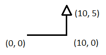
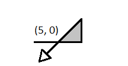

| Source file: | slice.{c, cpp, java} |
| Input file: | slice.in |
The Association for Cutting Machinery (ACM) has just announced a new portable laser capable of slicing through six-inch sheet metal like a hot knife through Jello (or butter, if you're a traditionalist). The laser is mounted on a small motorized vehicle which is programmed to drive over the surface being cut. The vehicle has two operations: it can move forward in a straight line, cutting the surface beneath it as it goes, or it can pivot in place to face a different direction.
Of course, trouble can arise if the laser cuts a hole in the surface, as the surface inside the hole will drop out, and the vehicle will fall in the hole. Your task is to take a set of instructions for the vehicle and decide whether they will result in cutting a hole—that is, if the path that it is cutting ever intersects itself. We will assume that we have an infinite surface, and that the laser makes a cut of zero width.
We assume that the starting location of the laser is
TURN -90 MOVE 10 TURN 90 MOVE 5 TURN 135 MOVE 10 TURN -90 MOVE 5
The vehicle will take the following actions:
|  |  |
| Figure 1: |
Figure 2: |
Input: The input will be a series of at most 20 data sets. Each data set begins with a line containing an integer N representing the number of turn/move combinations that will be executed (1 ≤ N ≤ 100). A value of zero for N indicates the end of the input.
The next N lines contain the instructions. Each
instruction contains two integers T and M,
where T is the number of degrees to turn
Note that, although T and M will be integers, you should not assume the position of the laser will always be integer coordinates; in fact, they will typically not be integral. We have taken care to choose data sets for which lines that intersect do so sufficiently away from an endpoint, and that lines that do not intersect remain sufficiently separated from each other.
Output: For each data set you should output the number of the first move instruction that will create a hole (e.g., output 3 if the third move creates the hole). Note that once you have detected a hole, the remaining instructions are irrelevant and may be ignored (but must still be read from the input).
If the entire set of instructions can be carried out without creating a hole, then print the word SAFE.
| Example input: | Example output: |
| 4 -90 10 90 5 135 10 -90 5 4 -90 10 90 5 135 5 -90 10 6 60 10 60 10 60 10 60 10 60 10 80 20 0 | 3 SAFE 6 |